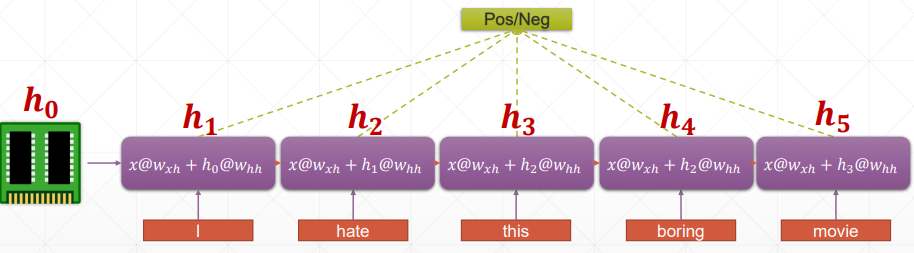
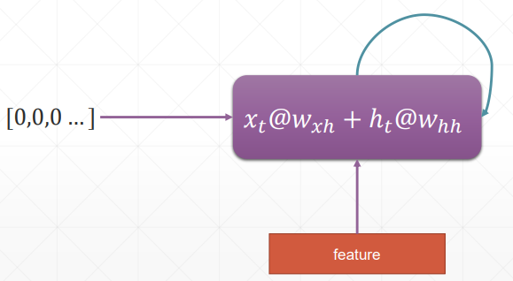
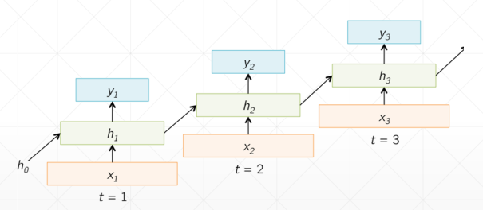
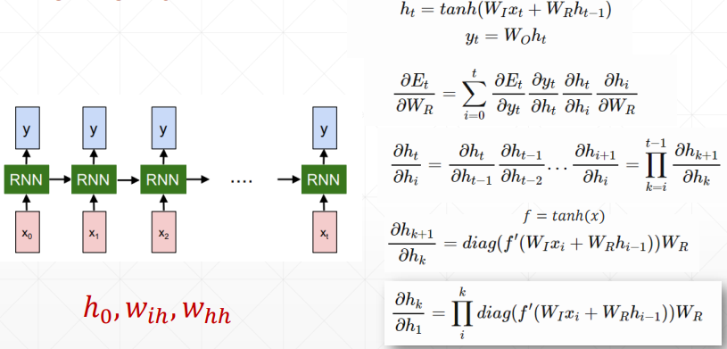
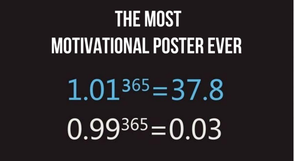
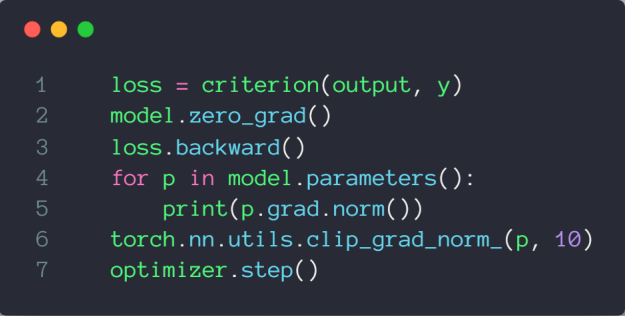
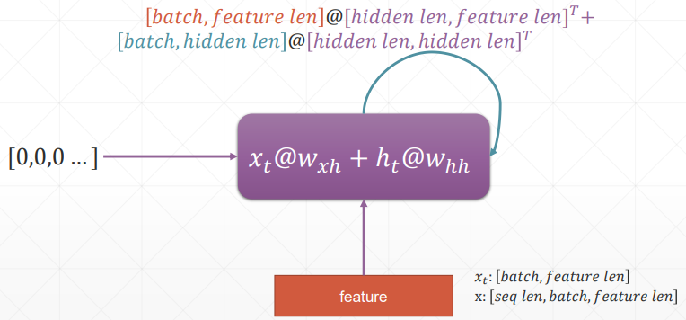
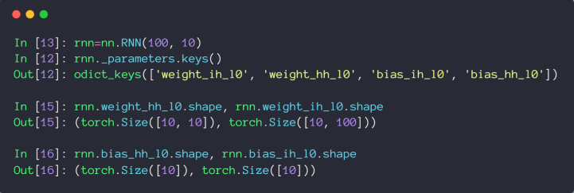

# 时间序列表示
通常表示为 [word num, batch, word vec]，即 [单词数，句子数，单词的特征维度数]
# 循环神经网络

h 表示连续的语义信息，为了减少参数量，所以 w 和 h 参数都是权重共享的


# 梯度更新

需要注意的是， 就是 ， 就是 W_
从梯度推导公式中可以看出，，里面包含了 ==== 的连乘，这就会导致梯度弥散和梯度爆炸 ==。
梯度爆炸可以尝试通过梯度裁剪解决，梯度弥散就需要靠 LSTM 网络啦


# 代码示例


import torch | |
from torch import nn | |
from torch import optim | |
from torch.nn import functional as F | |
def main(): | |
rnn = nn.RNN(input_size=100, hidden_size=20, num_layers=1) | |
print(rnn) | |
x = torch.randn(10, 3, 100) | |
out, h = rnn(x, torch.zeros(1, 3, 20)) | |
print(out.shape, h.shape) | |
rnn = nn.RNN(input_size=100, hidden_size=20, num_layers=4) | |
print(rnn) | |
x = torch.randn(10, 3, 100) | |
out, h = rnn(x, torch.zeros(4, 3, 20)) | |
print(out.shape, h.shape) | |
# print(vars(rnn)) | |
print('rnn by cell') | |
cell1 = nn.RNNCell(100, 20) | |
h1 = torch.zeros(3, 20) | |
for xt in x: | |
h1 = cell1(xt, h1) | |
print(h1.shape) | |
cell1 = nn.RNNCell(100, 30) | |
cell2 = nn.RNNCell(30, 20) | |
h1 = torch.zeros(3, 30) | |
h2 = torch.zeros(3, 20) | |
for xt in x: | |
h1 = cell1(xt, h1) | |
h2 = cell2(h1, h2) | |
print(h2.shape) | |
print('Lstm') | |
lstm = nn.LSTM(input_size=100, hidden_size=20, num_layers=4) | |
print(lstm) | |
x = torch.randn(10, 3, 100) | |
out, (h, c) = lstm(x) | |
print(out.shape, h.shape, c.shape) | |
print('one layer lstm') | |
cell = nn.LSTMCell(input_size=100, hidden_size=20) | |
h = torch.zeros(3, 20) | |
c = torch.zeros(3, 20) | |
for xt in x: | |
h, c = cell(xt, [h, c]) | |
print(h.shape, c.shape) | |
print('two layer lstm') | |
cell1 = nn.LSTMCell(input_size=100, hidden_size=30) | |
cell2 = nn.LSTMCell(input_size=30, hidden_size=20) | |
h1 = torch.zeros(3, 30) | |
c1 = torch.zeros(3, 30) | |
h2 = torch.zeros(3, 20) | |
c2 = torch.zeros(3, 20) | |
for xt in x: | |
h1, c1 = cell1(xt, [h1, c1]) | |
h2, c2 = cell2(h1, [h2, c2]) | |
print(h2.shape, c2.shape) | |
if __name__ == '__main__': | |
main() |
# 时间序列预测实战
参考：时间序列预测.pdf
import numpy as np | |
import torch | |
import torch.nn as nn | |
import torch.optim as optim | |
from matplotlib import pyplot as plt | |
num_time_steps = 50 | |
input_size = 1 | |
hidden_size = 16 | |
output_size = 1 | |
lr=0.01 | |
class Net(nn.Module): | |
def __init__(self, ): | |
super(Net, self).__init__() | |
self.rnn = nn.RNN( | |
input_size=input_size, | |
hidden_size=hidden_size, | |
num_layers=1, | |
batch_first=True, | |
) | |
for p in self.rnn.parameters(): | |
nn.init.normal_(p, mean=0.0, std=0.001) | |
self.linear = nn.Linear(hidden_size, output_size) | |
def forward(self, x, hidden_prev): | |
out, hidden_prev = self.rnn(x, hidden_prev) | |
# [b, seq, h] | |
out = out.view(-1, hidden_size) | |
out = self.linear(out) | |
out = out.unsqueeze(dim=0) | |
return out, hidden_prev | |
model = Net() | |
criterion = nn.MSELoss() | |
optimizer = optim.Adam(model.parameters(), lr) | |
hidden_prev = torch.zeros(1, 1, hidden_size) | |
for iter in range(6000): | |
start = np.random.randint(3, size=1)[0] | |
time_steps = np.linspace(start, start + 10, num_time_steps) | |
data = np.sin(time_steps) | |
data = data.reshape(num_time_steps, 1) | |
x = torch.tensor(data[:-1]).float().view(1, num_time_steps - 1, 1) | |
y = torch.tensor(data[1:]).float().view(1, num_time_steps - 1, 1) | |
output, hidden_prev = model(x, hidden_prev) | |
hidden_prev = hidden_prev.detach() | |
loss = criterion(output, y) | |
model.zero_grad() | |
loss.backward() | |
# for p in model.parameters(): | |
# print(p.grad.norm()) | |
# torch.nn.utils.clip_grad_norm_(p, 10) | |
optimizer.step() | |
if iter % 100 == 0: | |
print("Iteration: {} loss {}".format(iter, loss.item())) | |
start = np.random.randint(3, size=1)[0] | |
time_steps = np.linspace(start, start + 10, num_time_steps) | |
data = np.sin(time_steps) | |
data = data.reshape(num_time_steps, 1) | |
x = torch.tensor(data[:-1]).float().view(1, num_time_steps - 1, 1) | |
y = torch.tensor(data[1:]).float().view(1, num_time_steps - 1, 1) | |
predictions = [] | |
input = x[:, 0, :] | |
for _ in range(x.shape[1]): | |
input = input.view(1, 1, 1) | |
(pred, hidden_prev) = model(input, hidden_prev) | |
input = pred | |
predictions.append(pred.detach().numpy().ravel()[0]) | |
x = x.data.numpy().ravel() | |
y = y.data.numpy() | |
plt.scatter(time_steps[:-1], x.ravel(), s=90) | |
plt.plot(time_steps[:-1], x.ravel()) | |
plt.scatter(time_steps[1:], predictions) | |
plt.show() |